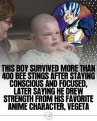

0

CNN reports that images from Iran's capital "have shown cars jammed along Tehran's street, with heavy traffic on major roads after today's wave of attacks by the US and Israel." And though Iran has a population of 93 million, the attacks suddenly plunged Iran into "a near-total internet blackout with national connectivity at 4% of ordinary levels," according to internet monitoring experts at NetBlocks.
CNN reports:
Since Iran's brutal crackdown earlier this year, the regime has made progress to allow only a subset of people with security clearance to access the international web, experts said. After previous internet shutdowns, some platforms never returned. The Iranian government blocked Instagram after the internet shutdown and protests in 2022, and the popular messaging app Telegram following protests in 2018.
The International Atomic Energy Agency announced an hour ago that they're "closely monitoring developments" — keeping in contact with countries in the region and so far seeing "no evidence of any radiological impact." They're also urging "restraint to avoid any nuclear safety risks to people in the region."
Read more of this story at Slashdot.
An anonymous reader quotes a report from Ars Technica: Google on Friday unveiled its plan for its Chrome browser to secure HTTPS certificates against quantum computer attacks without breaking the Internet. The objective is a tall order. The quantum-resistant cryptographic data needed to transparently publish TLS certificates is roughly 40 times bigger than the classical cryptographic material used today. Today's X.509 certificates are about 64 bytes in size, and comprise six elliptic curve signatures and two EC public keys. This material can be cracked through the quantum-enabled Shor's algorithm. Certificates containing the equivalent quantum-resistant cryptographic material are roughly 2.5 kilobytes. All this data must be transmitted when a browser connects to a site.
To bypass the bottleneck, companies are turning to Merkle Trees, a data structure that uses cryptographic hashes and other math to verify the contents of large amounts of information using a small fraction of material used in more traditional verification processes in public key infrastructure. Merkle Tree Certificates, "replace the heavy, serialized chain of signatures found in traditional PKI with compact Merkle Tree proofs," members of Google's Chrome Secure Web and Networking Team wrote Friday. "In this model, a Certification Authority (CA) signs a single 'Tree Head' representing potentially millions of certificates, and the 'certificate' sent to the browser is merely a lightweight proof of inclusion in that tree."
[...] Google is [also] adding cryptographic material from quantum-resistant algorithms such as ML-DSA (PDF). This addition would allow forgeries only if an attacker were to break both classical and post-quantum encryption. The new regime is part of what Google is calling the quantum-resistant root store, which will complement the Chrome Root Store the company formed in 2022. The [Merkle Tree Certificates] MTCs use Merkle Trees to provide quantum-resistant assurances that a certificate has been published without having to add most of the lengthy keys and hashes. Using other techniques to reduce the data sizes, the MTCs will be roughly the same 64-byte length they are now [...]. The new system has already been implemented in Chrome.
Read more of this story at Slashdot.
On February 24th, the Vera C. Rubin Observatory activated its automated alert system, sending out roughly 800,000 real-time notifications flagging asteroids, supernovae, flaring black holes and "other transient celestial events," reports Scientific American. And this is only the beginning -- that number is projected to climb into the millions as it continues scanning the ever-changing sky. From the report: The astronomical observatory equipped with world's largest camera hit a key milestone on February 24, when a complex data-processing system pushed hundreds of thousands of alerts out to scientists eager to pore over its most exciting sightings. The Vera C. Rubin Observatory began operations last year, capturing stunning, panoramic time-lapse views of the cosmos with ease. Rubin's first images, based on just 10 hours of observations, let space fans zoom seemingly forever into an overwhelmingly starry sky. But watchful astronomers were always awaiting the next step: the system that would automatically alert them to the most promising activity in the overhead sky amid the 1,000 or so enormous images that Rubin's telescope captures every night.
"We can detect everything that changes, moves and appears," said Yusra AlSayyad, an astronomer at Princeton University and Rubin's deputy associate director for data management, to Scientific American last summer. "It's way too much for one person to manually sift through and filter and monitor themselves." So even as they were designing and building the Rubin Observatory itself, scientists were also designing an alert system to help astronomers navigate the flood of data. As soon as the telescope began observations, the team started constructing a static reference image of the entire sky in impeccable detail.
Now the data processing systems that support the observatory are starting to automatically compare every new Rubin image to the corresponding section of that background template. The systems identify all of the differences, each of which is individually flagged. The algorithms can also distinguish between a potential supernova and a possible newfound asteroid, for example. Alerting the scientific community is the final, crucial step. Astronomers -- as well as members of the public -- can sign up for notifications based on the type of sighting they're interested in and the brightness of the observation in question. And now that the alerts system has gone live, users receive a tiny, fuzzy image with some astronomical metadata of each observation that fits their criteria -- all just a couple of minutes after Rubin captures the original image.
Read more of this story at Slashdot.
Southern California's air quality board rejected proposed rules to phase out gas-powered appliances after receiving more than 20,000 opposition comments generated through CiviClick, "the first and best AI-powered grassroots advocacy platform." Phys.org reports: A Southern California-based public affairs consultant, Matt Klink, has taken credit for using CiviClick to wage the opposition campaign, including in a sponsored article on the website Campaigns and Elections. The campaign "left the staff of the Southern California Air Quality Management District (SCAQMD) reeling," the article says. It is not clear how AI was deployed in the campaign, and officials at CiviClick did not respond to repeated requests for comment. But their website boasts several tools, including "state of the art technology and artificial intelligence message assistance" that can be used to create custom advocacy letters, as opposed to repetitive form letters or petitions often used in similar campaigns.
When staffers at the air district reached out to a small sample of people to verify their comments, at least three said they had not written to the agency and were not aware of any such messages, records show. But the email onslaught almost certainly influenced the board's June decision, according to agency insiders, who noted that the number of public comments typically submitted on agenda items can be counted on one hand.
The proposed rules were nearly two years in the making and would have placed a fee on natural gas-powered water heaters and furnaces, favoring electric ones, in an effort to reduce air pollution in the district, which includes Orange County and large swaths of Los Angeles, Riverside and San Bernardino counties. Gas appliances emit nitrogen oxides, or NOx -- key pollutants for forming smog. The implications are troubling, experts said, and go beyond the use of natural gas furnaces and heaters in the second-largest metropolitan area in the country.
Read more of this story at Slashdot.
New submitter DeanonymizedCoward shares a report from TechCrunch: The U.S. Cybersecurity and Infrastructure Security Agency (CISA) is reportedly in crisis following major budget cuts, layoffs, and furloughs under the Trump administration, says TechCrunch. The agency has now replaced its acting director, Madhu Gottumukkala, after a turbulent year marked by controversy and internal turmoil. During his tenure, Gottumukkala allegedly mishandled sensitive information by uploading government documents to ChatGPT, oversaw a one-third reduction in staff, and reportedly failed a counterintelligence polygraph needed for classified access. His leadership also saw the suspension of several senior officials, including CISA's chief security officer. Nextgov also reported that CISA lost another top senior official, Bob Costello, the agency's chief information officer tasked with overseeing the agency's IT systems and data policies. "Last month, CISA's acting director Madhu Gottumukkala reportedly took steps to transfer Costello, but other political appointees blocked it," added Nextgov.
Read more of this story at Slashdot.
joshuark shares a report from Ars Technica: Perplexity has introduced "Computer," a new tool that allows users to assign tasks and see them carried out by a system that coordinates multiple agents running various models. The company claims that Computer, currently available to Perplexity Max subscribers, is "a system that creates and executes entire workflows" and "capable of running for hours or even months."
The idea is that the user describes a specific outcome -- something like "plan and execute a local digital marketing campaign for my restaurant" or "build me an Android app that helps me do a specific kind of research for my job." Computer then ideates subtasks and assigns them to multiple agents as needed, running the models Perplexity deems best for those tasks. The core reasoning engine currently runs Anthropic's Claude Opus 4.6, while Gemini is used for deep research, Nano Banana for image generation, Veo 3.1 for video production, Grok for lightweight tasks where speed is a consideration, and ChatGPT 5.2 for "long-context recall and wide search."
This kind of best-model-for-the-task approach differs from some competing products like Claude Cowork, which only uses Anthropic's models. All this happens in the cloud, with prebuilt integrations. "Every task runs in an isolated compute environment with access to a real filesystem, a real browser, and real tool integrations," Perplexity says. The idea is partly that this workflow was what some power users were already doing, and this aims to make that possible for a wider range of people who don't want to deal with all that setup.
People were already using multiple models and tailoring them to specific tasks based on perceived capabilities, while, for example, using MCP (Model Context Protocol) to give those models access to data and applications on their local machines. Perplexity Computer takes a different approach, but the goal is the same: have AI agents running tailor-picked models to perform tasks involving your own files, services, and applications. Then there is OpenClaw, which you could perceive as the immediate predecessor to this concept.
Read more of this story at Slashdot.
South Korea has reversed a two-decade policy and approved the export of high-precision map data, paving the way for a fully functional Google Maps in the country. Reuters reports: The approval was made "on the condition that strict security requirements are met," the Ministry of Land, Infrastructure and Transport said in a statement. Those conditions include blurring military and other sensitive security-related facilities, as well as restricting longitude and latitude coordinates for South Korean territory on products such as Google Maps and Google Earth, it said.
The decision is expected to hurt Naver and Kakao -- local internet giants which currently dominate the country's market for digital map services. But it will appease Washington, which has urged Seoul to tackle what it says is discrimination against U.S. tech companies. South Korea, still technically at war with North Korea, had shot down Google's previous bids in 2007 and 2016 to be allowed to export the data, citing the risks that information about sensitive military and security facilities could be exposed. "Google can now come in, slash usage fees, and take the market," said Choi Jin-mu, a geography professor at Kyung Hee University. "If Naver and Kakao are weakened or pushed out and Google later raises prices, that becomes a monopoly. Then, even companies that rely on map services -- logistics firms, for example -- become dependent, and in the long run, even government GIS (geographic information) systems could end up dependent on Google or Apple. That's the biggest concern."
Read more of this story at Slashdot.
President Donald Trump has ordered all U.S. federal agencies to "immediately cease" using Anthropic's AI technology, escalating a standoff after the company sought limits on Pentagon use of its models. CNBC reports: The company, which in July signed a $200 million contract with Pentagon, wants assurances that the Defense Department will not use its AI models will not be used for fully autonomous weapons or mass domestic surveillance of Americans. The Pentagon had set a deadline of 5:01 p.m. ET Friday for Anthropic to agree to its demands to allow the Pentagon to use the technology for all lawful purposes. If Anthropic did not meet that deadline, Pete Hegseth threatened to label the company a "supply chain risk" or force it to comply by invoking the Defense Production Act.
"The Leftwing nut jobs at Anthropic have made a DISASTROUS MISTAKE trying to STRONG-ARM the Department of War, and force them to obey their Terms of Service instead of our Constitution," Trump said in a post on Truth Social. "Their selfishness is putting AMERICAN LIVES at risk, our Troops in danger, and our National Security in JEOPARDY."
"Therefore, I am directing EVERY Federal Agency in the United States Government to IMMEDIATELY CEASE all use of Anthropic's technology," Trump wrote. "We don't need it, we don't want it, and will not do business with them again! There will be a Six Month phase out period for Agencies like the Department of War who are using Anthropic's products, at various levels," Trump said. On Friday, OpenAI said it would also draw the same red lines as Anthropic: no AI for mass surveillance or autonomous lethal weapons.
Read more of this story at Slashdot.
An anonymous reader quotes a report from the Associated Press: The U.S. military used a laser Thursday to shoot down a "seemingly threatening" drone flying near the U.S.-Mexico border. It turned out the drone belonged to Customs and Border Protection, lawmakers said. The case of mistaken identity prompted the Federal Aviation Administration to close additional airspace around Fort Hancock, about 50 miles (80 kilometers) southeast of El Paso. The military is required to formally notify the FAA when it takes any counter-drone action inside U.S. airspace.
It was the second time in two weeks that a laser was fired in the area. The last time it was CBP that used the weapon and nothing was hit. That incident occurred near Fort Bliss and prompted the FAA to shut down air traffic at El Paso airport and the surrounding area. This time, the closure was smaller and commercial flights were not affected. The FAA, CBP and the Pentagon confirmed the incident in a joint statement, saying the military "employed counter-unmanned aircraft system authorities to mitigate a seemingly threatening unmanned aerial system operating within military airspace."
"At President Trump's direction, the Department of War, FAA, and Customs and Border Patrol are working together in an unprecedented fashion to mitigate drone threats by Mexican cartels and foreign terrorist organizations at the U.S.-Mexico Border," the statement said. The report notes that 27,000 drones were detected within 1,600 feet of the southern border in the last six months of 2024.
Illinois Democratic U.S. Sen. Tammy Duckworth, the ranking member on the Senate's Aviation Subcommittee, is calling for an independent investigation to look into the matter. "The Trump administration's incompetence continues to cause chaos in our skies," Duckworth said.
Read more of this story at Slashdot.
Tuesday Pew Research announced their newest findings: that 54% of America's teens use AI help with schoolwork:
One-in-five teens living in households making less than $30,000 a year say they do all or most of their schoolwork with AI chatbots' help. A similar share of those in households making $30,000 to just under $75,000 annually say this. Fewer teens living in higher-earning households (7%) say the same."
"The survey did not ask students whether they had used chatbots to write essays or generate other assignments..." notes the New York Times. "But nearly 60% of teenagers told Pew that students at their school used chatbots to cheat 'very often' or 'somewhat often.'" Agreeing with that are the Pew Researchers themselves. "Our survey shows that many teens think cheating with AI has become a regular feature of student life."
One worried teenager still told the researchers that AI "makes people lazy and takes away jobs." But another teenager told the researchers that "Everyone's going to have to know how to use AI or they'll be left behind."
Thanks to long-time Slashdot reader theodp for sharing the article.
Read more of this story at Slashdot.
A start-up called Reflect Orbital "proposes to use large, mirrored satellites to redirect sunlight to Earth at night," reports the Washington Post, "with plans to bathe solar farms, industrial sites and even entire cities in light that could, if desired, reach the intensity of daylight...."
Slashdot noted their idea in 2022 — but Reflect Orbital now expects to launch its first satellite in April, according to the article. "But its grand vision is largely 'aspirational,' as its young founder, Ben Nowack, told me..."
Reflect Orbital's Nowack describes a scene right out of sci-fi: An extremely bright star appears on the northern horizon and makes its way across the sky, illuminating a 5-kilometer circle on Earth, then setting on the southern horizon about five minutes later, just as another such "star" appears in the north. To make the night even brighter, a customer could make 10 "stars" appear at once in the north by ordering them on an app. Two such artificial stars are in development in Reflect Orbital's factory. Nowack showed them to me on a Zoom call. The first to launch is 50 feet across, but he plans later to build them three times that size. If all goes according to plan, he'll have 50,000 of them circling the Earth in 2035 at an altitude of around 400 miles.
Nowack plans to start selling the service "in mostly developing nations or places that don't have streetlights yet." Eventually, he thinks, he can illuminate major cities, turn solar fields and farms into round-the-clock operations for any business or municipality that pays for it. He likened his technology to the invention of crop irrigation thousands of years ago. "I see this as much the same thing," he said, arguing that people would no longer have to "wait for the sun to shine."
The article adds that Elon Musk's SpaceX "wants to launch as many as a million satellites to serve as orbiting data centers — 70 times the number of satellites now in orbit." (America's satellite-regulation Federal Communications Commission
grants a "categorical exclusion" from environmental review to satellites on the grounds that their operations "normally do not have significant effects on the human environment.")
The public comment periods for the two proposals close on March 6 and March 9.
Read more of this story at Slashdot.
An anonymous reader quotes a report from Wired: OpenAI has fired an employee following an investigation into their activity on prediction market platforms including Polymarket, WIRED has learned. OpenAI CEO of Applications, Fidji Simo, disclosed the termination in an internal message to employees earlier this year. The employee, she said, "used confidential OpenAI information in connection with external prediction markets (e.g. Polymarket)." "Our policies prohibit employees from using confidential OpenAI information for personal gain, including in prediction markets," says spokesperson Kayla Wood. OpenAI has not revealed the name of the employee or the specifics of their trades.
Evidence suggests that this was not an isolated event. Polymarket runs on the Polygon blockchain network, so its trading ledger is pseudonymous but traceable. According to an analysis by the financial data platform Unusual Whales, there have been clusters of activities, which the service flagged as suspicious, around OpenAI-themed events since March 2023. Unusual Whales flagged 77 positions in 60 wallet addresses as suspected insider trades, looking at the age of the account, trading history, and significance of investment, among other factors. Suspicious trades hinged on the release dates of products like Sora, GPT-5, and the ChatGPT Browser, as well as CEO Sam Altman's employment status. In November 2023, two days after Altman was dramatically ousted from the company, a new wallet placed a significant bet that he would return, netting over $16,000 in profits. The account never placed another bet.
The behavior fits into patterns typical of insider trades. "The tell is the clustering. In the 40 hours before OpenAI launched its browser, 13 brand-new wallets with zero trading history appeared on the site for the first time to collectively bet $309,486 on the right outcome," says Unusual Whales CEO Matt Saincome. "When you see that many fresh wallets making the same bet at the same time, it raises a real question about whether the secret is getting out." [...] Though this is the first confirmed case of a large technology company firing an employee over trades in prediction markets, it's almost certainly not the last. Opportunities for tech sector employees to make trades on markets abound. "The data tells me this is happening all over the place," Saincome says.
Read more of this story at Slashdot.
Researchers at Cortical Labs used living human neurons grown on a chip to learn how to play Doom in about a week. "While its performance is not up to par with humans, experts say it brings biological computers a step closer to useful real-world applications, like controlling robot arms," reports New Scientist. From the report: In 2021, the Australian company Cortical Labs used its neuron-powered computer chips to play Pong. The chips consisted of clumps of more than 800,000 living brain cells grown on top of microelectrode arrays that can both send and receive electrical signals. Researchers had to carefully train the chips to control the paddles on either side of the screen. Now, Cortical Labs has developed an interface that makes it easier to program these chips using the popular programming language Python. An independent developer, Sean Cole, then used Python to teach the chips to play Doom, which he did in around a week.
"Unlike the Pong work that we did a few years ago, which represented years of painstaking scientific effort, this demonstration has been done in a matter of days by someone who previously had relatively little expertise working directly with biology," says Brett Kagan of Cortical Labs. "It's this accessibility and this flexibility that makes it truly exciting."
The neuronal computer chip, which used about a quarter as many neurons as the Pong demonstration, played Doom better than a randomly firing player, but far below the performance of the best human players. However, it learnt much faster than traditional, silicon-based machine learning systems and should be able to improve its performance with newer learning algorithms, says Kagan. However, it's not useful to compare the chips with human brains, he says. "Yes, it's alive, and yes, it's biological, but really what it is being used as is a material that can process information in very special ways that we can't recreate in silicon." Cortical Labs posted a YouTube video showing its CL1 biological computer running Doom. There's also source code available on GitHub, with additional details in a README file.
Read more of this story at Slashdot.
An anonymous reader shares a report: Weeks after the U.S. Congress rejected unprecedented cuts to science budgets that the administration of US President Donald Trump had sought for 2026, funding to several agencies that award research grants is still not freely flowing.
One reason is that the White House Office of Management and Budget (OMB) has been slow to authorize its release. The US National Institutes of Health (NIH) has so far not received approval to spend any of the research funding allocated in a budget bill signed into law on 3 February. The US National Science Foundation (NSF) was authorized to spend its funding just last week. And NASA has had its full funding authorized for release, but with an unusual restriction that limits spending on ten specific programmes -- many of which the Trump team had tried to cancel last year.
Read more of this story at Slashdot.
Author Dan Simmons, best known for the epic sci-fi novel Hyperion and its sequels, has died at 77 following a stroke. Ars Technica's Eric Berger remembers Simmons, writing: Simmons, who worked in elementary education before becoming an author in the 1980s, produced a broad portfolio of writing that spanned several genres, including horror fiction, historical fiction, and science fiction. Often, his books included elements of all of these. This obituary will focus on what is generally considered his greatest work, and what I believe is possibly the greatest science fiction novel of all time, Hyperion.
Published in 1989, Hyperion is set in a far-flung future in which human settlement spans hundreds of planets. The novel feels both familiar, in that its structure follows Chaucer's Canterbury Tales, and utterly unfamiliar in its strange, far-flung setting. Simmons' Hyperion appeared in an Ask Slashdot story back in 2008, when Slashdot reader willyhill asked for tips on how Slashdotters track down great sci-fi. If you're in the mood for a little nostalgia, or just want to browse the thread for book recommendations, it's well worth revisiting.
Read more of this story at Slashdot.
Jordan Novet / CNBC : Claude hit #2 on Apple's US App Store, hours after the DOD designated Anthropic a supply chain risk; it bounced between #20 and #50 for much of February — Anthropic's Claude artificial intelligence assistant app jumped to the No. 2 slot on Apple's chart of top U.S. free apps late on Friday …
Wall Street Journal : Sources: Israel hacked BadeSaba, a popular Iranian prayer app with 5M+ installs on Google Play, to send messages urging Iranian military personnel to defect — Israel hacked a popular Iranian prayer app to send notifications to potentially millions of phones Saturday morning urging …
John Collison / Cheeky Pint : Q&A with Reiner Pope, a former Google TPU architect and CEO of MatX, which designs specialized chips for LLMs, on the limitations of current AI chips, and more — Reiner Pope is the co-founder and CEO of MatX, designing specialized chips for Large Language Models.
Brendan Bordelon / Politico : The Pentagon's fight with Anthropic sparks fears in Silicon Valley and the Capitol of a fundamental shift in the balance of power between DC and the AI industry — Trump was silent on another threat that Hegseth had delivered to Anthropic earlier this week, when he suggested DOD would invoke …
Jo Ling / CBS News : Dario Amodei says “we are patriotic Americans” and Anthropic fears some AI uses could clash with American values as AI's potential gets “ahead of the law” — Add CBS News on Google — Hours after a bitter feud between the Pentagon and Anthropic ended …
New York Times : How India's outsourcing industry, which employs 6M+ people and is worth nearly $300B, is racing to adapt as AI promises to automate white-collar work — Artificial intelligence promises to automate the white-collar work that made India a tech powerhouse. The country is racing to adapt before it's too late.
Manish Singh / India Dispatch : AI's deflationary impact on India's IT industry, which has never seen a decline in software exports in 24 years, will likely take years to fully materialize — The cost of electricity does not run an enterprise. — A post written as a fictional memo from June 2028 by short-seller Citrini …
Stuart A. Thompson / New York Times : Tests of 12+ AI-detection tools show many capable of spotting basic fakes, but struggle with complex images; few analyze video, and most identified fake audio — Artificial intelligence detectors are increasingly used to check the veracity of content online.
Dell Cameron / Wired : US Congressional Joint Economic Committee report: US consumers lost $20.9B nominally to identity theft from four major data broker breaches over the past decade — A report copublished by WIRED sparked a probe into opt-out pages hidden by data brokers. Now congressional Democrats …
Tim Culpan / Culpium : Sources: TSMC urges clients to apply for N2 production allocation as far out as Q2 2027, with large capacity allotments nearly sold out for the next two years — [Exclusive] Clients are being asked to finalize their requirements into mid 2027, with larger customers already booking capacity over the next two to three years.
Wired : Anthropic's dispute with the DOD raises critical questions for US military partners like Nvidia, Google, Amazon, and Palantir, which work closely with Anthropic — Anthropic says it would be “legally unsound” for the Pentagon to blacklist its technology after talks over military use of its artificial intelligence models broke down.
Reuters : Coupang reports Q4 revenue up 11% YoY to $8.8B, below $8.9B est., and a net loss of $26M, versus $131M net profit in Q4 2024, hurt by fallout from a data breach — E-commerce giant Coupang (CPNG.N) swung to a fourth-quarter loss on Thursday and reported revenue below analysts' estimates …
Jagmeet Singh / TechCrunch : Source: India issued a blocking order on February 24 to restrict access to developer database service Supabase; the government did not publicly cite a reason — Supabase, a popular developer database platform, is facing disruptions in India — one of its key markets — has been blocked in India, TechCrunch has learned.
Wall Street Journal : Sources: Nvidia plans to unveil a new AI inference chip at its GTC conference in March; the system will have a Groq-designed chip and OpenAI is a customer — Under pressure from rivals, the chip giant is set to offer a new product focused on rapid processing of AI queries for ‘inference’ demand
Sam Altman / @sama : Sam Altman says OpenAI reached an agreement with the DOD to deploy its models in DOD's classified network and asks DOD to extend those terms to all AI companies — Tonight, we reached an agreement with the Department of War to deploy our models in their classified network. In all of our interactions, the DoW displayed a deep respect for safety and a desire to partner to achieve the best possible outcome. AI safety and wide distribution of